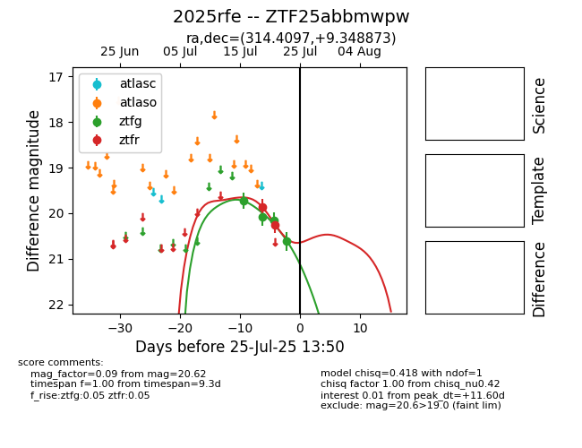

Target 2025rfe at 2025-07-25 13:50, see:
FINK: fink-portal.org/2025rfe
Lasair: lasair-ztf.lsst.ac.uk/objects/2025rfe
ALeRCE: alerce.online/object/2025rfe
TNS: wis-tns.org/object/2025rfe
YSE: ziggy.ucolick.org/yse/transient_detail/2025rfe
alt names
ZTF25abbmwpw (ztf,fink)
2025rfe (tns,yse)
coordinates:
equatorial (ra, dec) = (314.4097,+9.34887)
galactic (l, b) = (57.2508,-22.67011)
photometry
last ztfg=20.62, ztfr=20.25
4 ztfg, 2 ztfr detections
